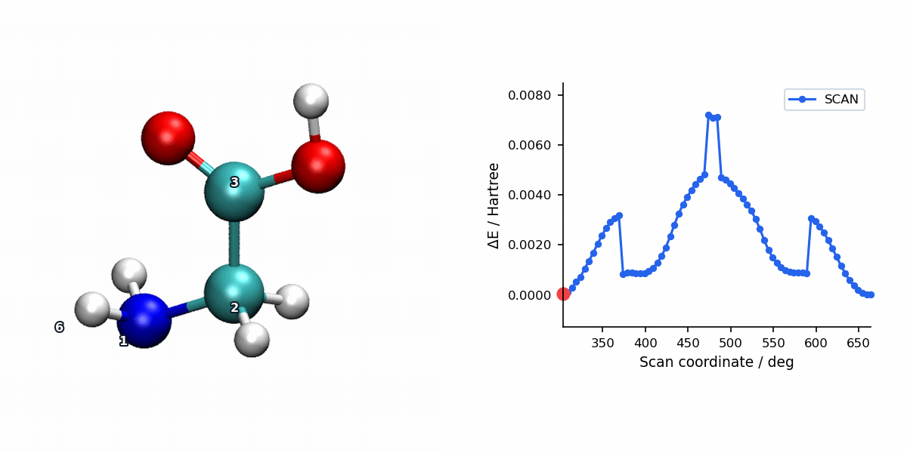

PES Scan with SD/CG Optimization
Overview
SD/CG is available for relaxed PES scans through #scan(method=sdcg). It reuses MAPLE's hybrid SD-to-CG optimizer at each scan point: the SD phase first stabilizes high-force geometries, then the CG phase improves convergence near the constrained minimum.
This method is useful when a scan contains both rough and smooth regions, or when you want a single optimizer that can handle changing scan-point difficulty.
Parameters
Per-point SD/CG settings reuse the same controls as #opt(method=sdcg). The scan driver keeps per-point optimizer verbosity quiet.
| Parameter | Type | Default | Description |
|---|---|---|---|
max_step |
float | 0.2 |
Maximum step length in Angstrom. |
max_iter |
int | 256 |
Maximum optimization cycles per scan point. |
sd_max_iter |
int | 50 |
Maximum iterations in the initial SD phase before switching to CG. |
cg_switch_fmax |
float | 0.0 |
Switch from SD to CG when the maximum force drops below this value (Hartree/Angstrom). The default 0.0 enables the runtime auto-threshold: 0.5 × the initial maximum force. |
cg_restart_threshold |
float | 0.2 |
Restart CG directions when the gradient change ratio exceeds this value. |
cg_beta_method |
str | "prp+" |
Conjugate gradient beta formula. |
diis_enabled |
bool | True |
Enable DIIS extrapolation acceleration. |
diis_store_every |
int | 5 |
Store a DIIS snapshot every N steps. |
diis_min_snapshots |
int | 3 |
Minimum snapshots required before DIIS extrapolation is attempted. |
diis_memory |
int | 6 |
Maximum number of DIIS snapshots stored. |
verbose |
int | 0 in scans |
Per-point optimizer verbosity. Scan keeps this low so the scan log stays readable. |
Input Example
Checked-in MAPLE example: example/scan/sdcg/glycine_backbone_torsion.inp. This is the relaxed glycine backbone torsion scan shown in the visualization below:
#model=aimnet2nse
#scan(method=sdcg,mode=relaxed)
#device=gpu0
N -1.64695360 -1.29691911 -0.90833498
C -0.45216594 -0.59642464 -1.41625210
C -0.84033589 0.54283507 -2.34787441
O -1.97257790 0.87393427 -2.66478245
O 0.22929521 1.20487418 -2.83060947
H -2.25086549 -0.60633338 -0.45686313
H -2.19402852 -1.61340515 -1.71207045
H 0.17205835 -1.30686984 -1.96558531
H 0.10890908 -0.18794943 -0.57097223
H -0.15752184 1.89889132 -3.40493371
S 6 1 2 3 5.0 72The final S line is a dihedral scan: four atom indices followed by a 5.0 degree step and 72 increments, producing 73 scan points including the initial geometry.
Scan Visualization
The animation below pairs the generated scan geometries with the energy profile for a relaxed glycine backbone torsion scan using SD/CG.

When to Use SD/CG Scans
- Scan points vary strongly in difficulty: The SD phase rapidly reduces large forces without requiring any history, then hands off to CG for efficient final convergence — combining the robustness of SD with the speed of CG.
- Distorted scans where pure CG starts too aggressively: SD/CG is a robust default that avoids the early oscillations pure CG can show on rough geometries.
- Well-behaved large scans: L-BFGS may still be faster for routine production grids when starting geometries are already reasonable.
For production-quality scans, L-BFGS (the default) is generally preferred due to its superior per-point convergence near minima. SD/CG is most useful as a robust scan optimizer for severely distorted structures or when L-BFGS has difficulty converging at certain scan points.